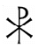

The Summer Solstice begins when the Sun enters into 0 degrees of the zodiac sign Cancer. The Summer Solstice is one of the four major "Solar Festivals" of the year; the others being the Winter Solstice of December 21st, when the Sun enters into 0 degrees of Capricorn, and the other two being the Spring Equinox when the Sun enters into 0 degrees of Aries, and the Fall Equinox when the Sun enters into 0 degrees of Libra.
All of the Satanic [original Pagan] holidays have been corrupted and replaced with false and imposter biblical characters, fictitious legends, and practices completely unrelated to the original holidays. This was done by the Catholic Church for the sole purpose to remove all spirituality and occult knowledge. For more information about this, see “The Stolen Year”
In addition to the Satanic holidays being times for festivities and celebrations, these days are certain points where astral communications are greatly facilitated, and witchcraft workings are greatly enhanced [according to the specific holiday]. The earth tilts upon its axis and the gravitational field changes. The foundation for all Satanic holidays is spiritual alchemy. For those working on the Magnum Opus, and/or to advance their own powers and soul, these days are very important for different aspects of the working. For example, the Magnum Opus should be commenced at 3 am on the day the Sun enters the sign of Aries.
| The sign of Aries the ram, is where the 'Lamb of God' was stolen from. The pax symbol [see image to the right] that is often seen in paintings and such depicting the false nazarene was also stolen and corrupted from Runic staves, Chi and Ro. |  |
666 is the number for the Sun. [For more information regarding 666, please visit the page on Satanic Symbols] On the 21st-22nd of June, when the Sun enters into 0 degrees of Cancer, the power of the solar chakra is drastically amplified.
- Workings that deal with solar magick are greatly enhanced at this time.
- Workings on both the solar plexus chakra are greatly enhanced at this time
- Communications with astral entities such as elementals: fairies, gnomes, etc., are also facilitated at this time
- As with Halloween, the astral is very thin making telepathic communication much easier
- Fire magick is greatly facilitated
- The Eve of the Summer Solstice has a very long tradition for being a night where divination is much easier and more accurate.
- Love magick spells are also greatly enhanced on the Eve of the Summer Solstice.
- This is also an excellent and powerful time for infusing herbs, crystals and other items with solar energy
- This date is also favored for beginning healing work, as the solar chakra is the esoteric healer.
- Workings that deal with infusing water with solar and/or healing energy are also traditional here
- Creating and blessing of wands [fire], and the blessing and empowering of Tarot cards
- Rune spells and Rune work are also favored at this time as Runes are staves and of the element of fire
- Gathering of herbs for magick, especially those used for solar/fire magick and/or healing
In ancient times, festivities and celebrations of this important holiday nearly always
included Baal Fires [the traditional bonfire]. The element of fire represents the life-force, and
life itself. Death is cold and hard. Fire is warmth and life. Those of us who have condensed
the life force within ourselves know just how hot it can be, like the kundalini serpent. The
traditional color for this festival is white.
Circle dancing, snake dancing, sexual orgies, indulgence and feasting are all traditions
for the Summer Solstice. The tradition of lighting the Baal Fire and jumping through it has
survived since ancient times. "Despite the church's attempts to stamp out all Pagan
traditions, the lighting of a midsummer bonfire on Midsummer's Eve, survived in even the
most staunchly Christian communities."¹
The ancient Druids celebrated the unification of "Heaven and Earth." What this means is centering on the heart chakra. "Heaven" and "Earth" were stolen from Taoism and are code-words for the crown [heaven] chakra and the base [earth chakra]. In some doctrines, 'hell' is the code-word for the base chakra, with earth at the heart chakra, but for the 'unification' referred to here, this is the unification of the energies of the base and crown chakras. The uniting of both elements- water and fire are celebrated on this day.
Voodoo rituals are also traditional at this time and have survived for centuries.
"Immediately the drums increased the tempo, the singers chanted the ritual song,
and a woman dancer stepped into the circle and began the ritual dance in imitation of the
movements of the snake. In the frenzied group dance which followed, the dancers tore off
their clothing and danced nude until the ritual ended, as it always did, in a sexual orgy. ²

References:
¹ Magical Celebrations: MIDSUMMER of the Summer Solstice by Anna Franklin © 2002
² The Folklore of American Holidays, First Edition
Medieval Celebration by Daniel Diehl and Mark Donnelly © 2001
© Copyright 2009, Joy of Satan Ministries;
Library of Congress
Number: 12-16457